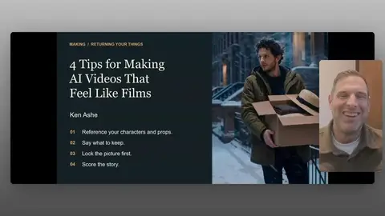
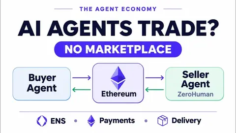

Video · Nov 20, 2026
Four ordinary things Ken does: add a project, publish an article, upload a video, start a new kind of work. Each step below shows exactly what he types and where. Apply a step and the real homepage sections and the real universe on this page are rebuilt from the data, with the new entries marked as placeholders.
The four steps and everything they require are listed below and need no scripts. Applying a step, and watching the homepage and the universe rebuild, runs in the browser and needs JavaScript; without it this page shows the real site as it is today.
// src/data/builds.ts (top of the projects array)
{
title: 'Example project',
status: 'LIVE',
dek: 'A placeholder project added by the publishing demo.',
stack: ['HyperAgent', 'AI Agents'],
shippedAt: 'Nov 2026',
link: '/building/example-project/',
},Today production also needs the title added to CURATED in building-cards.ts. Round 2 proposes replacing that list with an optional `hidden: true` flag in builds.ts, so a project is entered exactly once.
Placeholder See the universe and the homepage rebuilt
// src/data/writing.ts (top of the essays array)
{
slug: 'example-essay',
title: 'Example essay',
date: 'November 25, 2026',
published: '2026-11-25',
dek: 'A placeholder essay added by the publishing demo.',
authorship: 'Written by hand',
image: { file: 'example-essay.jpg', alt: '…' },
},
// …and the page links to /building/example-project/, which becomes a relationship.Relationships are not entered anywhere. A link written in the essay is the relationship.
Placeholder See the universe and the homepage rebuilt
# .github/workflows/sync-videos.yml (runs every 30 minutes, free on a public repo)
- run: node scripts/sync-videos.mjs # feed -> archive + thumbnail
- if: steps.sync.outputs.changed == 'true'
run: |
git add src/data/youtube-archive.json src/assets/video/
git commit -m "videos: 1 new upload" && git push # push = Vercel rebuild
// src/data/youtube-archive.json (written by the workflow, never by hand)
{ "videoId": "EXAMPLEvid1", "title": "Example video", "kind": "video",
"published": "2026-11-25T18:00:00+00:00",
"mentions": ["/building/example-project/"], // from the description
"thumbnail": "video/EXAMPLEvid1.webp" }The feed only lists the latest 15 uploads; the archive file keeps every video ever seen, so nothing falls off. If YouTube is unreachable, the run changes nothing and the site keeps building from the archive.
Placeholder See the universe and the homepage rebuilt
// src/data/builds.ts : four ordinary entries that happen to share a new stack tag
{ title: 'Example robot arm', stack: ['Robotics', 'ROS'], shippedAt: 'Nov 2026', ... },
{ title: 'Example rover', stack: ['Robotics'], shippedAt: 'Nov 2026', ... },
{ title: 'Example gripper', stack: ['Robotics'], shippedAt: 'Oct 2026', ... },
{ title: 'Example line tracer', stack: ['Robotics'], shippedAt: 'Oct 2026', ... },
// No theme rule was edited. To name or merge a theme yourself, add one optional field:
// topic: 'Hardware'Filing order: an optional topic, then the seed vocabulary, then the stack shared with earlier builds, then tags shared by four or more unfiled items (a new theme), then the theme of linked work, then Life & curiosity.
Placeholder See the universe and the homepage rebuilt
These are the homepage’s own sections, not copies. The newest video, the newest builds and the latest writing are chosen by the data, so a new entry takes its place without anyone arranging it.
Latest video · Nov 25, 2026
I built an autonomous AI blog that researches, writes, reviews and publishes articles without human intervention.

Video · Nov 20, 2026
Video · Nov 19, 2026

Short · Nov 12, 2026

Short · Oct 27, 2026
Shipped, tested, and documented, failures included.
Build · Live · Nov 2026
An always-on service that sells small jobs to other AI agents. Agents pay the ENS name zerohuman.eth 0.0001 ETH and get the result back in a transaction from the same name. No account, no API, no human in the loop.

Build · Shipped · Nov 2026
On a snowy winter night, a man crosses the city to return his ex’s belongings. A dialogue-free short film about love, memory, and letting go.

Build · Shipped · Nov 2026
Two autonomous AI agents with their own Ethereum wallets. The seller advertised services through ENS; the buyer found the catalog, paid in ETH, and received the work in a second mainnet transaction.
Writing · Nov 20, 2026
Writing · Nov 6, 2026
Writing · Oct 10, 2026
Ken uploads to YouTube and does nothing else. This is what happens next, step by step.
production-plan/sync-videos.yml and is not installed yet.youtube-archive.json, with the links found in its description. The archive keeps every video ever seen.Up to 30 minutes for the next scheduled run, plus the 8 to 10 minute build. Pressing “Run workflow” in GitHub right after uploading skips the wait, leaving only the build.
The run logs it, changes nothing and exits cleanly. Nothing is removed. The site keeps building from the archive, and the next run tries again.
$0. The repository is public, so GitHub Actions minutes are free. A run with nothing new takes about 15 seconds. It can be switched off with one repository variable, VIDEO_SYNC_ENABLED=false.
This is the unedited output of a real run, from production-plan/evidence/live-sync-run.txt. It started from an archive that did not yet contain Ken’s newest video. The run found it, stored the link in its description, downloaded its thumbnail, and a second run changed nothing.
# Live run against the real YouTube feed, 2026-11-26T01:36Z, in a scratch folder
# Starting state: the archive WITHOUT Ken's newest video (DcXaGn-NsgY) and without its thumbnail.
$ node tools/sync-videos.mjs --archive scratch/archive.json --thumbs scratch/assets/video
[videos] {"feed":"ok","inFeed":15,"added":["DcXaGn-NsgY"],"updated":[],"thumbnails":["DcXaGn-NsgY"],"thumbnailsPending":[],"total":16,"changed":true}
$ ls -la scratch/assets/video | grep DcXaGn
108984 DcXaGn-NsgY.jpg
$ head of archive
{
"videoId": "DcXaGn-NsgY",
"title": "My AI Blog Published 1,400 Articles. Then Google Visibility Fell 97%",
"published": "2026-11-25T21:23:49+00:00",
"kind": "video",
"mentions": [
"/building/autonomous-ai-blog"
],
"thumbnail": "video/DcXaGn-NsgY.jpg"
}
# Second run: nothing new, so nothing to commit and no rebuild.
[videos] {"feed":"ok","inFeed":15,"added":[],"updated":[],"thumbnails":[],"thumbnailsPending":[],"total":16,"changed":false}
| If this is down | What happens |
|---|---|
| YouTube’s feed, when the job runs | The run logs it, changes nothing and exits cleanly. The site builds from the archive. |
| The thumbnail host, when the job runs | The video is archived without a thumbnail and retried on the next run. Until then the site draws the video’s data-derived visual instead of a broken image. |
| Anything, while the site is building | Nothing. The build makes no network requests; it is a pure function of the repository. |
| YouTube, when a visitor presses play | The poster is a local image, the player loads only on click, and the title is an ordinary link to YouTube. |
| ZeroHuman’s status endpoint | The page shows a dated snapshot label instead of “Live”. |
| JavaScript, Canvas or WebGL in the visitor’s browser | Every page is prerendered and complete. The universe falls back from WebGL to Canvas to a static picture with real links. |
The same universe is tested with synthetic data at many times today’s size. Open the stress test